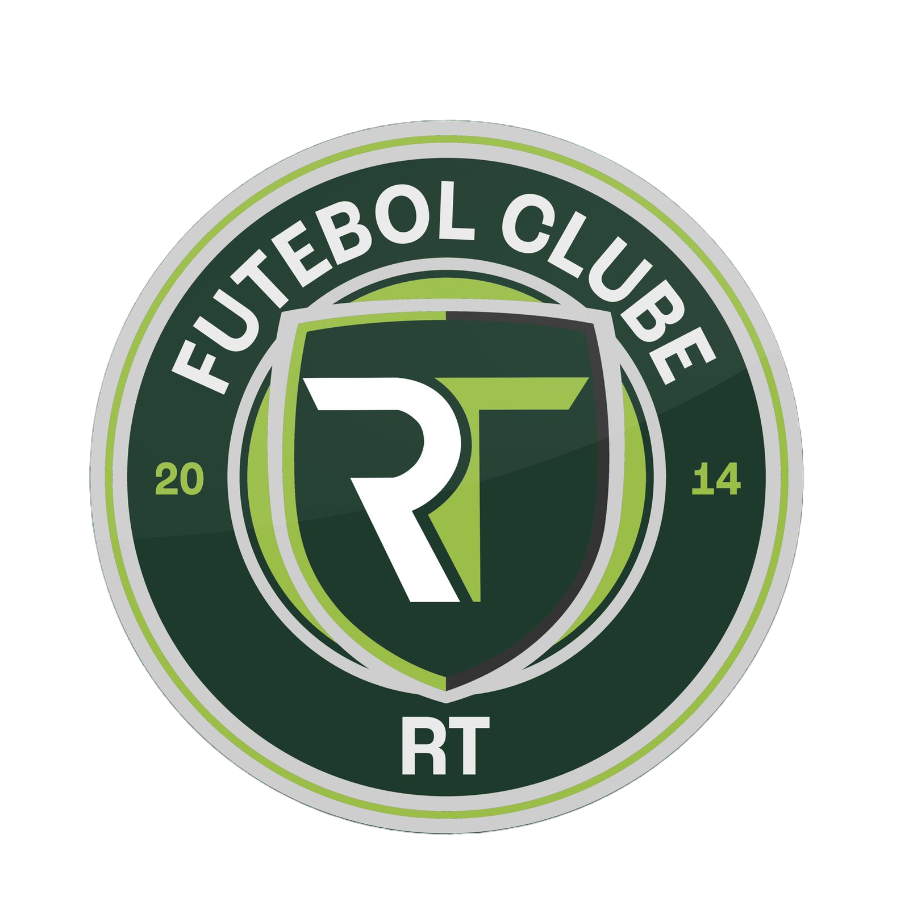
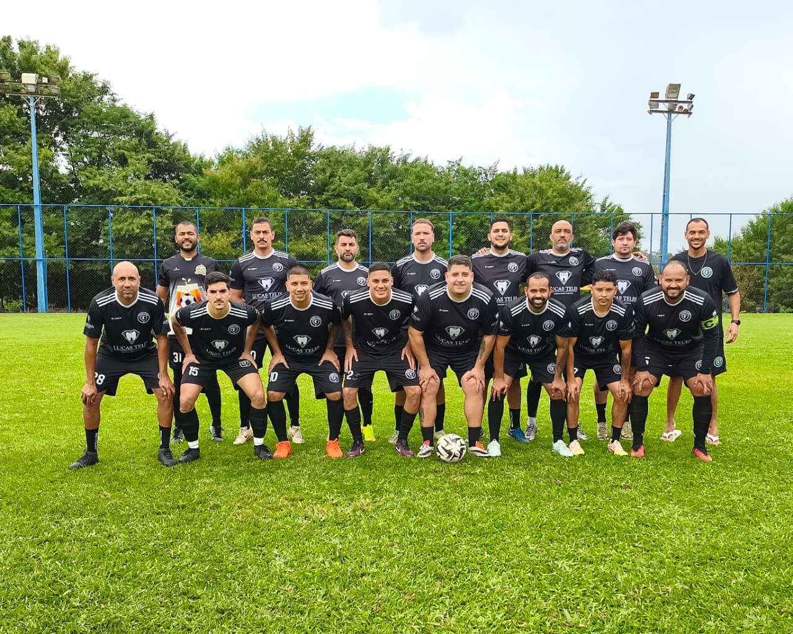
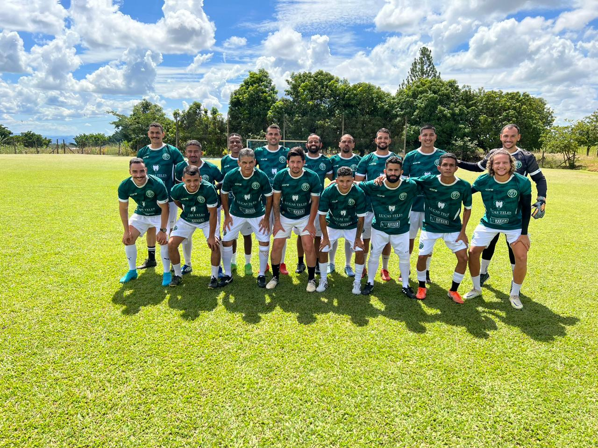
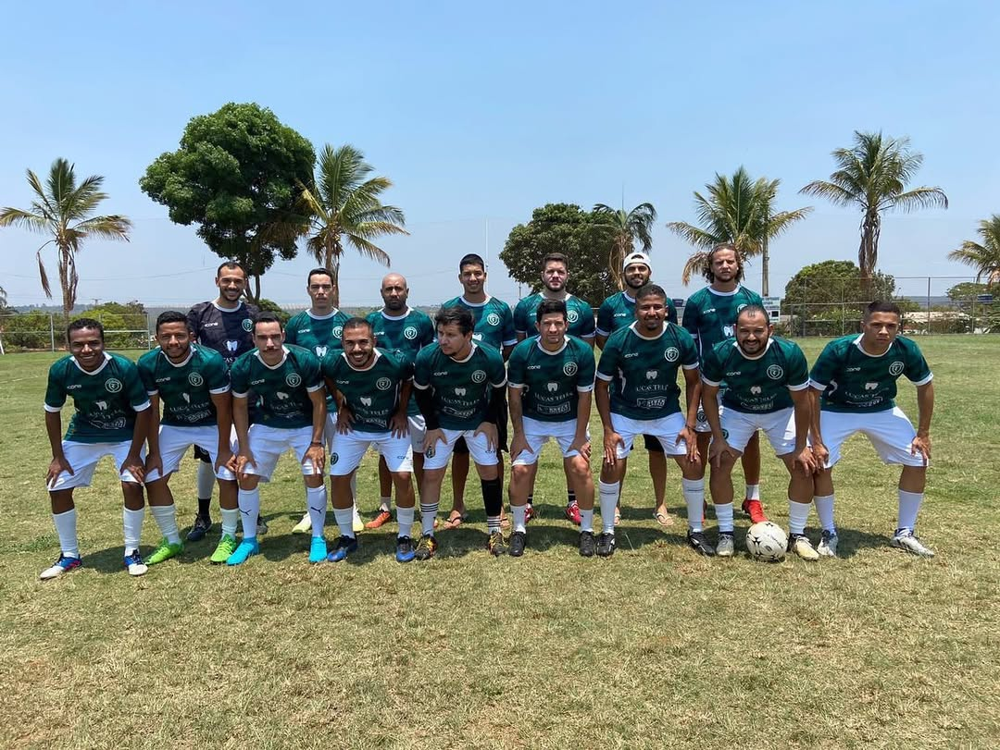
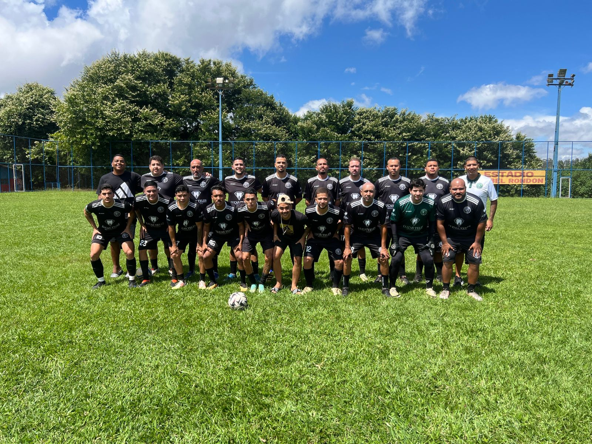
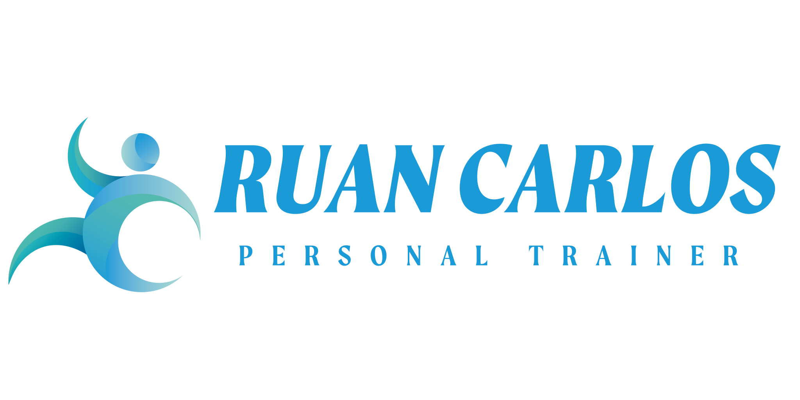
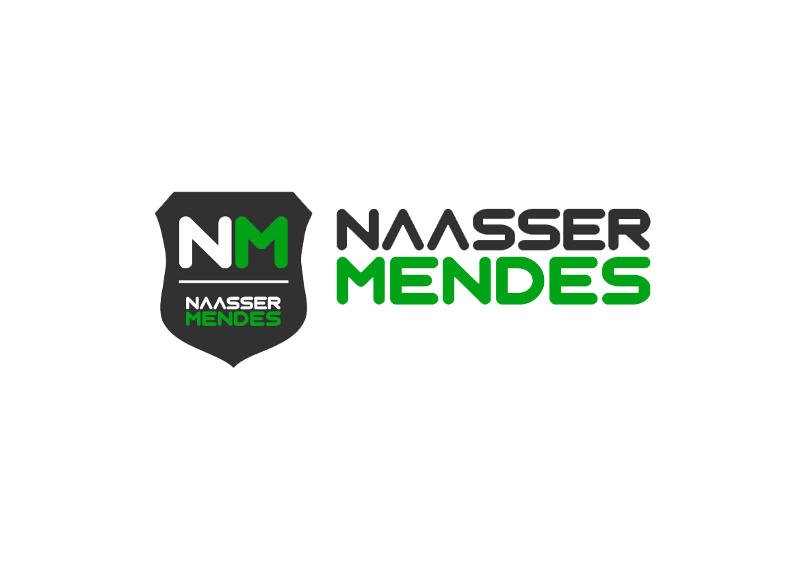
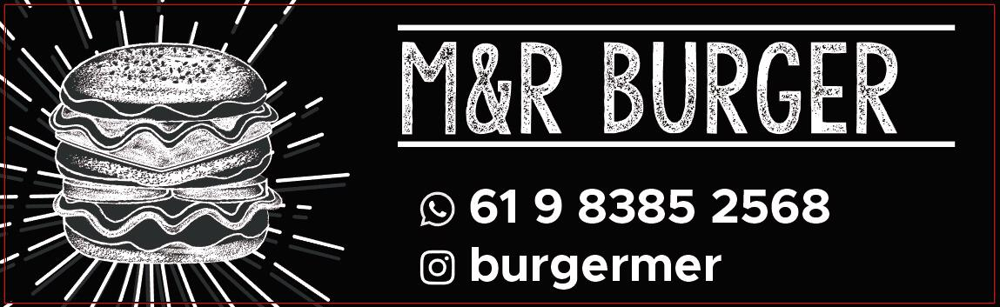
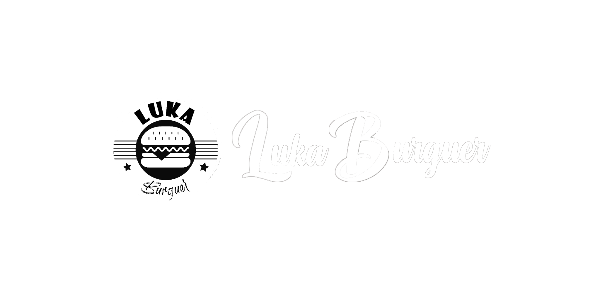

Nasce o Grupo RT
Oito amigos se unem para disputar a Copa EJE.

RT Futebol Clube Quero patrocinar
Uma história de amizade, solidariedade e futebol construída desde 2014.
O grupo RT nasceu em 2014, quando oito amigos se reuniram para disputar a Copa EJE, campeonato da igreja que frequentavam. O torneio terminou, mas a amizade permaneceu.
Oito amigos se unem para disputar a Copa EJE.
Doações de cestas, caldos e agasalhos passam a fazer parte da história do grupo.
Uma conquista marcante no futsal.
A amizade ganha um novo capítulo dentro das quatro linhas.
Mais de 80 atletas já vestiram a camisa do RT.


O RT mantém uma comunicação ativa com atletas, torcedores, amigos e parceiros por meio de resultados, reels, bastidores e conteúdos institucionais.

Conteúdo esportivo, bastidores e parceiros em destaque.
Serão produzidos aproximadamente 80 uniformes entre atletas e torcedores, aumentando a exposição dos parceiros durante toda a temporada.
Empresas e profissionais que ajudam a fortalecer o esporte amador e a história do RT.




Insira abaixo o WhatsApp e o Instagram oficiais antes de publicar.